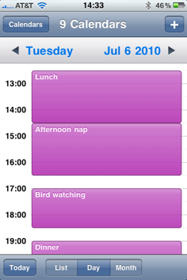
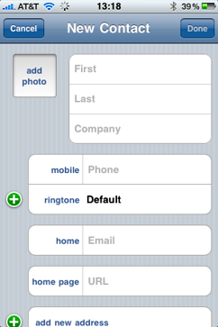
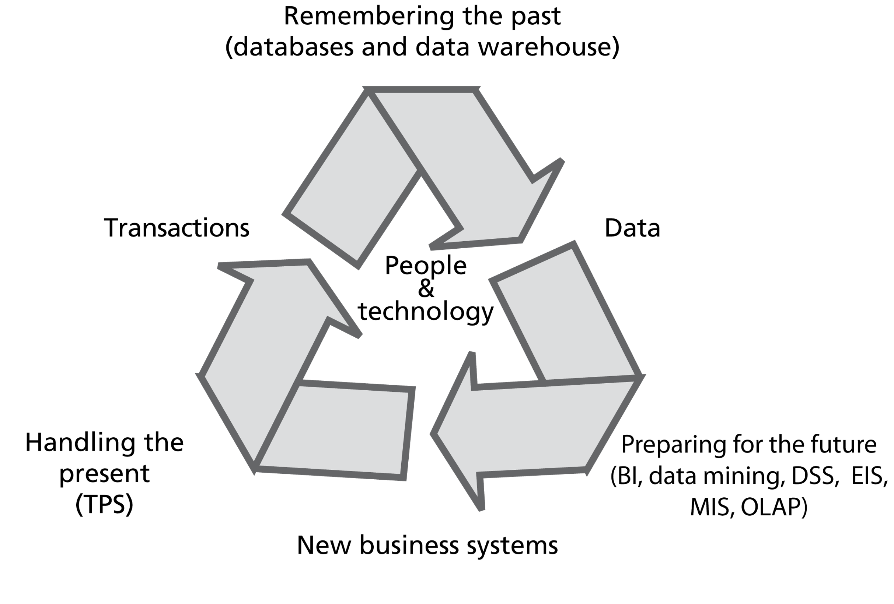
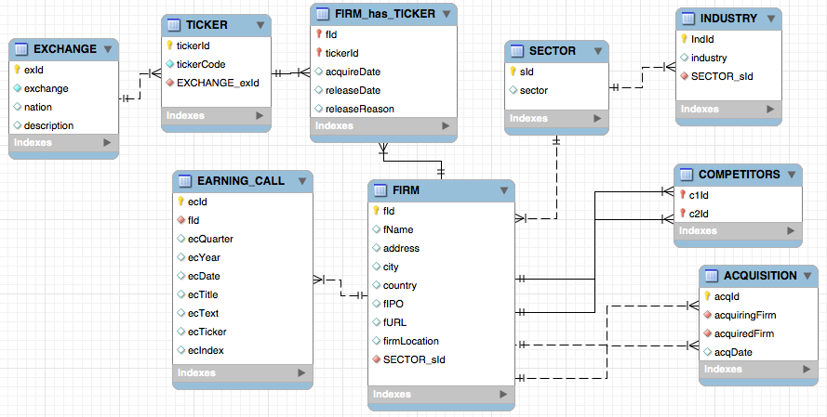
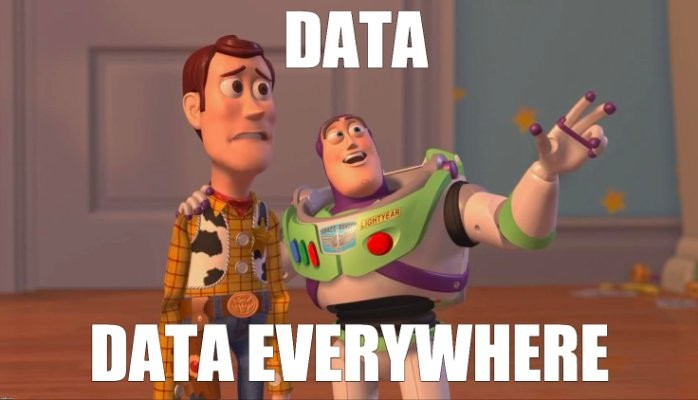

Database Management - Introduction
Managing Data
“All the value of this company is in its people. If you burned down all our plants, and we just kept our people and our information files, we should soon be as strong as ever.”
“The most meaningful way to differentiate your company from your competitors, the best way to put distance between you and the crowd, is to do an outstanding job with information. How you can gather,manage and use information will determine whether you win or lose”
The two quotes above show us a very important truth about managing organization. In the Information society, which is based on innovation, knowledge and services, the key determinant of success has shifted from product quality to decision quality. In the traditional industrial society, the better quality product you had, the better market position you had (which is still very true in some cases). Nowadays, Companies are very dependent on information systems to create value for their customers. In other words, the better information you have, the better is your position.
If you are not convinced, think about your own private life. In today’s fast-paced world, managing personal information effectively is essential. Tools like calendars and address books serve as crucial external memory systems, helping us stay organized and on top of our daily tasks.
A calendar not only helps us track appointments, meetings, and deadlines but also organizes time in a structured way, often with features to quickly navigate to today’s date or upcoming events.

Similarly, address books store important contact details, such as phone numbers and email addresses, allowing for easy access to frequently contacted individuals.

Both systems are designed to reduce the mental burden of remembering every detail, providing an efficient means of storing and retrieving information, thus enabling us to focus on more important tasks.
There are some common features of all these systems:
- Storage medium
- Electronic / paper
- Structure for storing data
- Data is organized for:
- Efficient data entry
- Rapid data retrieval
- Any design requires trade-offs
Organizational Data Management
Organizations, like people, need to remember many things. Deciding where and how to store data frequently involves a trade-off.
Organizational data are used by a variety of information systems.
There are many types of Information Systems in organizations.
| Type of IS | System’s purpose |
|---|---|
| TPS | Transaction processing system: Collects and stores data from routine transactions |
| MIS | Management information system: Converts data from a TPS into information for planning, controlling, and managing an organization |
| DSS | Decision support system: Supports managerial decision making by providing models for processing and analysing data |
| EIS | Executive information system: Provides senior management with information necessary to monitor organizational performance, and develop and implement strategies |
| OLAP | Online analytical processing: Presents a multidimensional, logical view of data |
| Data mining | Uses statistical analysis and artificial intelligence techniques to identify hidden relationships in data |
| BI | Business intelligence: Systems for gathering, storing, analyzing, and accessing data to improve decision-making |
All of them may require some sort of data to work.

Attributes of a Data Management System
For the data to be effectively fed into all these systems, data management systems must meet specific requirements:
| Requirement | Description |
|---|---|
| Shareable | Readily accessible to multiple users (at the same time). |
| Transportable | Easily accessible by users in different locations (e.g., salesperson, decision-maker). |
| Secure | Safe from destruction or unauthorized use. |
| Accurate | Reliable and trustworthy. |
| Timely | Current and up-to-date. |
| Relevant | Valuable and appropriate for its intended use. |
Challenges of a Data Management System
Similarly, there are challenges and problems that database management systems must overcome:
| Challenge | Description |
|---|---|
| Redundancy | The same data is replicated in multiple locations. |
| Lack of Data Control | Data is not secure or effectively organized and managed. |
| Poor Interface | Data is not accessible. |
| Delays | Data is not timely. |
| Lack of Reality | Data is not relevant because it lacks fidelity to the real world it represents. |
| Lack of Data Integration | Related data is stored in separate, isolated locations. |
Databases and Database Design
Data vs. Information
Before diving into databases, it’s crucial to grasp the distinction between data, information, and knowledge. Databases don’t just store raw data – they organize it into meaningful information that can be analyzed to generate knowledge.
Data consists of raw facts and figures without context, like individual numbers or words. Information emerges when data is organized and given context, making it meaningful and useful – for instance, when those numbers represent monthly sales figures. Knowledge goes further: it’s the understanding gained from analyzing and applying information, allowing us to make informed decisions and recognize patterns.
| Category | Characteristics | Example |
|---|---|---|
| Data | • Raw facts • No context • Just numbers and text |
Temperature readings: 23, 25, 22, 24, 26 |
| Information | • Data with context • Processed data • Value added to data • Summarized • Organized • Analyzed |
Daily temperature readings in Celsius for Pavia, week of June 1-5, 2024, showing an average of 24°C with an upward trend |
| Knowledge | • Knowing what information is required • Knowing what the information means |
Understanding that the rising temperature trend in Pavia indicates the start of summer and knowing to adjust city services (like water supply) and public health advisories accordingly |
A database’s true value lies in its ability to transform raw data into actionable insights through structured organization and relationships.
Database
A database is an organized collection of related files used to store and manage data efficiently. It serves as a single logical data repository, ensuring that data is structured, accessible, and self-describing. Databases contain both user data (actual stored information) and metadata (data about the data, such as structure and relationships).
In a relational database, data is organized into tables, where each row (record) represents a unit of interest, and each column (field) defines an attribute of that unit.
There are different types of databases based on usage and architecture:
Types of Databases Explained
1. Single-User vs. Multi-User Databases
- Single-User Database: Designed for one user at a time, typically used in personal applications or small-scale projects (e.g., Microsoft Access, SQLite).
- Multi-User Database: Supports multiple users accessing and modifying data simultaneously, often used in businesses and enterprise systems (e.g., MySQL, PostgreSQL).
2. Operational (Transactional) vs. Analytical Databases
- Operational (Transactional) Database: Used for real-time operations, such as processing daily business transactions (e.g., banking systems, e-commerce platforms). These databases are optimized for fast inserts, updates, and deletes.
- Analytical Database: Designed for reporting and decision-making, optimized for complex queries and data analysis rather than frequent transactions (e.g., data warehouses like Amazon Redshift or Google BigQuery).
3. Centralized, Distributed, or Cloud Databases
- Centralized Database: All data is stored in a single location, often on a dedicated server. This setup simplifies management but can become a bottleneck as data scales.
- Distributed Database: Data is spread across multiple locations or servers, improving performance and reliability (e.g., Google Spanner, Apache Cassandra).
- Cloud Database: Hosted on cloud platforms, allowing for scalable, flexible, and remotely accessible data storage (e.g., AWS RDS, Google Cloud SQL).
4. Single-Tenant vs. Multi-Tenant Databases
- Single-Tenant Database: Each customer (tenant) has their own dedicated database. This provides better security and customization but can be expensive (e.g., private database instances for enterprises).
- Multi-Tenant Database: A single database serves multiple customers, with data logically separated. This is commonly used in SaaS (Software as a Service) applications (e.g., Salesforce, Shopify).
5. Relational vs. Non-Relational Databases
- Relational Database (RDBMS): Uses structured tables with predefined relationships and follows SQL for querying (e.g., MySQL, PostgreSQL, Oracle). Best for structured, consistent data.
- Non-Relational Database (NoSQL): Stores data in flexible formats like key-value pairs, documents, graphs, or columns (e.g., MongoDB, Redis, Cassandra). Ideal for big data, real-time applications, and unstructured data.
Each database type is suited for different use cases depending on the scale, structure, and nature of the data being managed.
Database Model
Database Model is the logical representation of the structure of the data.

Data Modelling
- The technique for creating the logical structure of a database
- What files (tables) should be in the database?
- How are these files related?
- What columns should describe each row in a table?
- Data Modeling is an iterative process
- Data Modeling is a communication tool
Data Modelling is a design process
DESIGN: the specification of an object, intended to accomplish goals, in a particular environment, using a set of primitive components, satisfying a set of requirements, subject to constraints.
Data Modelling is an iterative process
Data modeling is a highly repetitive and cyclical process, requiring continuous refinement and improvement at every stage. It begins with an initial conceptual model, which is repeatedly reviewed, adjusted, and expanded based on new insights, stakeholder feedback, and evolving business needs. Each iteration involves revisiting assumptions, restructuring relationships, and optimizing performance to ensure the model remains accurate and efficient. As data requirements change, the process loops back, refining previous versions and incorporating necessary modifications. This ongoing cycle of evaluation and enhancement ensures that the final data model is robust, scalable, and aligned with organizational goals.
Data Modelling is a communication process
It serves as a bridge between technical teams, business stakeholders, and end users. It translates complex data structures into understandable diagrams and definitions, ensuring that everyone involved has a clear understanding of how data is organized, stored, and utilized. Effective data modeling requires collaboration, as stakeholders provide input on business rules and requirements while data architects translate these needs into structured models. This shared understanding helps prevent misinterpretations, aligns expectations, and ensures that the final database or system supports business objectives efficiently.
WAIT! WHY BOTHER?
Why don’t we just use Excel like everyone else???
While Excel is a powerful tool for organizing and analyzing data, it is not designed for managing large-scale, complex datasets that require consistency, security, and efficient querying. Databases offer structured storage, ensuring data integrity through constraints, relationships, and normalization, which Excel lacks. Additionally, databases handle concurrent access, scalability, automation, and advanced querying via SQL, making them the superior choice for robust and reliable data management.l
{kind=link}
One major issue with using Excel for data management is the risk of anomalies—problems that arise due to poorly structured data.
Anomalies are problems that occur in a poorly designed database when inserting, updating, or deleting data. They happen because data is not organized properly, leading to inconsistencies, duplication, or unintended data loss.
Let’s consider this table. It contains stock market data that is used by an investment firm dealing with international commodities and agricultural products. Think about the problems we may have with it
{kind=link}
Insertion anomalies occur when adding new data is difficult due to missing dependencies.
For example n our table you cannot add a new nation exchange rate without creating a (fake) stock
Update anomalies lead to inconsistencies when changes must be made in multiple places.
When the exchange rate in the UK changes you must update the rows for 10 shares. Likely to generate errors and/or inconsistencies
Deletion anomalies cause unintended data loss when removing a record also removes critical information.
For example, if you sell “Bombay Duck” you lose information about the Indian exchange rate.
Unlike Excel, databases prevent these anomalies through normalization, ensuring data is stored efficiently and consistently.
Database Management Systems
A Database Management System (DBMS) is software that allows users to create, store, manage, and retrieve data efficiently.
{kind=link}
A Database Management System (DBMS) is essential for businesses as it reduces data inconsistency, ensuring that the same information does not appear differently across multiple locations. A DBMS also improves data sharing, security, and access, allowing authorized users to retrieve and update data seamlessly. This leads to better decision-making as businesses can rely on accurate and up-to-date information. Additionally, it enhances end-user productivity by streamlining workflows and reducing errors.
Examples of DBMS include MySQL, PostgreSQL, Oracle, and Microsoft SQL Server.
Overall, a DBMS provides better data integration, making business operations more efficient and reliable.
DBMS Functions:
| Function | Description |
|---|---|
| Data dictionary management | Stores definitions of the data elements and their relationships |
| Data storage management | Performance tuning: Ensures efficient performance of the database in terms of storage and access speed |
| Data transformation and presentation | Transforms entered data to conform to required data structures |
| Security management | Enforces user security and data privacy |
| Multiuser access control | Sophisticated algorithms ensure that multiple users can access the database concurrently without compromising its integrity |
| Backup and recovery management | Enables recovery of the database after a failure |
| Data integrity management | Minimizes redundancy and maximizes consistency |
| Database access languages and application programming interfaces | - Query language: Lets the user specify what must be done without having to specify how - Structured Query Language (SQL): De facto query language and data access standard supported by the majority of DBMS vendors |
| Database communication interfaces | Accept end-user requests via multiple, different network environments |
We’ve covered a lot of essential concepts in database management that will be crucial as you move forward in your careers. Whether you’re working with data on a daily basis or simply using data-driven tools to make informed business decisions, understanding how databases function will help you navigate the complexities of the modern business world.

As you start applying these principles in real-world scenarios, remember that data is one of your most valuable assets. The better you manage and understand it, the better decisions you’ll make, and the more competitive your business will be.
Images and GIFs Disclaimer: Some of the images and GIFs used on this website are not owned by me. They are used for educational and illustrative purposes only. All rights belong to their respective owners. If you believe any content violates copyright, please contact me for prompt removal.